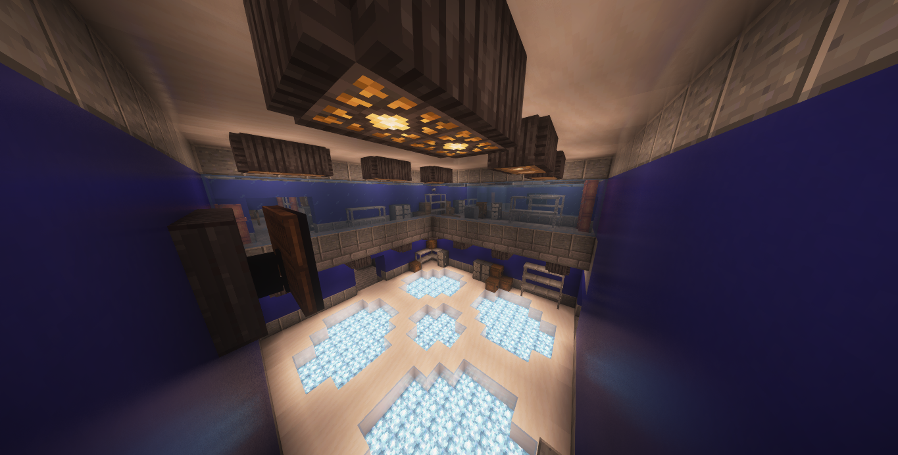
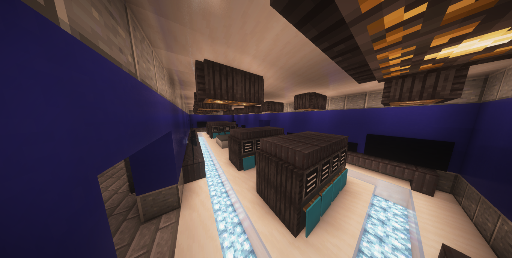

Departamento de Informação
O Departamento de Informação é o núcleo central de armazenamento, análise e preservação de dados da A.F.A. Toda informação produzida ou coletada pela agência — incluindo registros de anomalias, documentos operacionais, dados de funcionários, relatórios de eventos e sistemas internos — é processada e mantida sob responsabilidade deste departamento e seu líder, Chesed.
Funções
- Registro, catalogação e atualização de arquivos relacionados a anomalias
- Armazenamento e preservação de documentos institucionais e históricos
- Gerenciamento de informações de funcionários e operações internas
- Distribuição controlada de dados entre departamentos autorizados
- Manutenção e segurança dos bancos de dados da A.F.A
Infraestrutura
O Departamento de Informação abriga o núcleo principal de servidores da A.F.A, uma estrutura tecnológica responsável por sustentar todo o sistema informacional da organização. Este núcleo é considerado vital para o funcionamento da agência, sendo constantemente monitorado e protegido por múltiplos protocolos de segurança.
Todos os documentos passam obrigatoriamente por processos de revisão e validação antes de serem oficialmente registrados nos servidores, garantindo a integridade, precisão e confiabilidade das informações armazenadas.
Registro Histórico
Há aproximadamente 43 anos, uma falha crítica ocorrida em um dos departamentos da A.F.A resultou em um evento de contenção em massa, no qual diversas anomalias escaparam simultaneamente da instalação.
Esse incidente causou danos severos à infraestrutura do Departamento de Informação, resultando na perda parcial e, em alguns casos, total de registros históricos sobre diversas anomalias. Como consequência direta, uma quantidade significativa de informações valiosas daquela época permanece até hoje incompleta ou irrecuperável.
Desde então, a A.F.A mantém esforços contínuos para a redescoberta, reclassificação e documentação de novas anomalias, além da recuperação progressiva de dados antigos, com o objetivo de reduzir riscos futuros e prevenir eventos similares.
Observações da A.F.A
O Departamento de Informação é considerado um dos pilares fundamentais da agência. Qualquer falha em seus sistemas representa uma ameaça direta à capacidade da A.F.A de compreender, conter e responder adequadamente a eventos anômalos.

Nome: Chesed
Idade: 42
Aniversário: 12/08
Gênero: Masculino
Cargo: Diretor de Informação
Trabalha na AFA desde:1997
Instalações do Departamento


